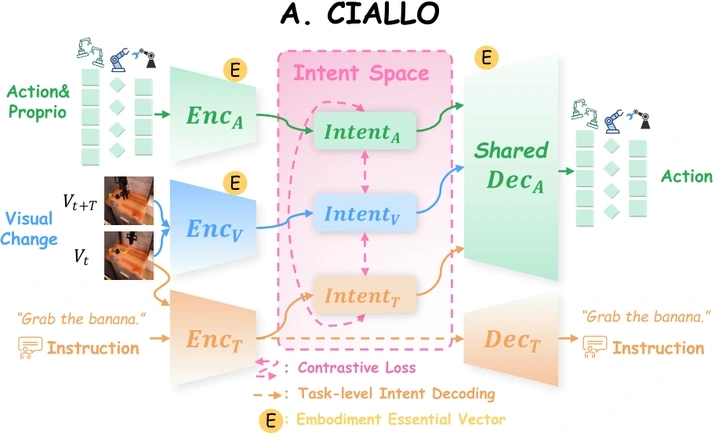

 arXiv 预印本 · 2026 年 11 月 CIALLO: Learning Shared Intent Representations for Cross-Embodiment Manipulation Choo Sin Wai*, Dake Zhong*, Jingye Zhang*, Zhifang Liu, Siyao Xiao, Zirong Ding, Yuhong Zhang, Kangjie Chen, Dongbin Zhang, Guorui Song, Guocun Wang, Peng Jiao, Haoqian Wang† CIALLO 从动作、视觉变化和语言指令中学习不同机器人共有的操作意图表示。只需采集一小段校准数据，就能让动作编解码器适配新的机器人。 arXiv ↗PDF 全文 ↗